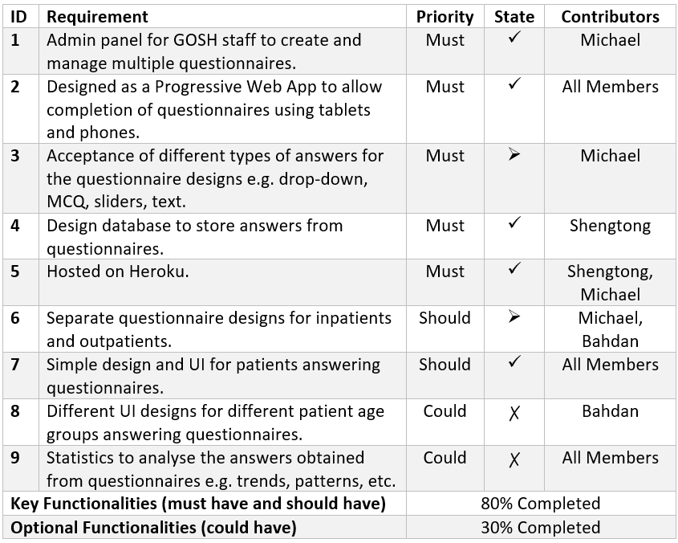
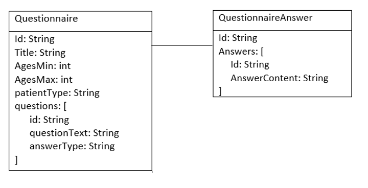

min.lau.18@ucl.ac.uk
Roles: Front-end Developer, Website Content Writer and Coder
Team 17
Hospital Surveys
Home
About Hospital SurveysProject Title: Hospital Surveys


Our Motivations:
Hear the voices of these children.
We believe it is crucial for child patients of Great Ormond Street Hospital to be able to provide feedback based on their experiences. Whether it be hospital facilities, the way patients are treated, or just the overall experience, feedback not only allows children to share their experiences, but can also help improve hospital services in the future.
Hospital Surveys - Our Solution
Thus, we have developed Hospital Surveys, an online survey tool that that allows child patients to answer surveys to provide feedback anonymously, providing them a safe space to express themselves.Project Abstract:
Hospital Surveys is an online survey tool for hospitals. Surveys are designed by hospital staff using a web application and delivered to patients using a progressive web app. A database stores the anonymised patient feedback, which can be exported for further analysis.
Key Features:
- Progressive Web Application.
- App allows admins to design, create, and manage questionnaires stored in a database, in turn allowing child patients to answer these questionnaires.
- Data analysis of questionnaire data and responses
- Django back-end REST API, rendered with a React JS front-end User Interface.
- Web app is hosted on Heroku.
The Development Team
List of Team Members-
Min Yen Lau
-
Shengtong Jiang
shengtong.jiang.18@ucl.ac.uk
Roles: Back-end Developer, Website Coder -
Bahdan Kapionkin
bahdan.kapionkin.18@ucl.ac.uk
Roles: Front-end Developer, Website Content Writer
Requirements
User Requirements for Hospital SurveysGathering User Requirements:
We’ve decided to carry out a semi-structured interview for the two users that would use our product, which are the GOSH DRIVE Admins designing questionnaires, and the child patients answering them.
MoSCoW List of Requirements:
Hospital Surveys' FeaturesWe came up with a list of requirements after agreements with our project partners.
Personas and Use Cases
Personas and Use Cases representing users of our web-app .


Research
Related Frameworks, Technologies, and ProjectsRelated Technologies
Since our application is a completely new web-application, it was important for us to do some research on the various frameworks and libraries to be used on our web-app. The frameworks that we have researched have their own advantages and disadvantages, but after spending more time learning about these frameworks, we have narrowed them down to a few choices that suited our needs:
-

Django
Django is a Python framework which follows the model-template-view pattern. In practice, we found it to have many built-in features such as a back-end administration panel UI, easy database mapping, and easy authentication [1].
Django's ORM (object-relational mapping) layer handles database migrations very elegently, using Models to create tables instead of requiring users to use SQL directly [6]. Since we are required to store survey data in a database, this feature could be very helpful.
Another advantage of using Django is that it is very secure [6]. This web framework provides protections against XSS and CSRF attacks, SQL injections, clickjacking and many more.
For its downsides, time is required to get started to learn the basic Django boilerplate and structure, and Django can also come across as a little bit monolithic. -

Flask
Flask is a light-weight Python microframework that is easier to get started with [7]. It is unopinionated, and allows the developers to implement things using their own methods. .
One advantage of using Flask is that it allows for a good learning experience as it forces us to truly understand our code implementation due to its flexibility.
Besides that, Flask also has great performance, due to it being a micro framework. It is more "low-level" than Django, and contains fewer layers of abstraction between the web application and the database and HTTP requests.
However, it offers much less built-in functionality than Django, and requires developers to be flexible [1] to make the best design decisions. Functionalities such as authentication is much harder to be implemented in the future.
-

Vue
- Open-source JavaScript progressive framework that follows the Model–view–Viewmodel pattern.
- Heavy emphasis on Single File Components, allowing us to build style and functions within one file.
- Has a gentle learning curve [2] due to its simple API.
- Fast and light-weight, and is generally straight-forward.
- Open-source JavaScript progressive framework that follows the Model–view–Viewmodel pattern.
-

React
- An extremely popular framework, hence resource availability is very high.
- Requires the use of various other libraries for different functionality.
- Has a slightly steeper learning curve [2] than Vue, but ‘create-react-app’ package helps us get started easily.
- Contains service workers [3] that allows users to see results even when offline.
- An extremely popular framework, hence resource availability is very high.
Back-End Decision:
We have decided to use Django over Flask despite its steeper initial learning curve. This is because we believe Django lets us focus on the actual questionnaire designs in the long run, as a lot of functionality such as authentication and database management is already built-in. We also think that Flask may introduce many bugs in the future due to our inexperience in back-end development so far.
Front-End Decision:
Both frameworks were reasonable to us, but we decided that React was the best choice as our front-end JavaScript framework in the end. Despite having a steeper learning curve, we decided that the ‘create-react-app’ package can help us overcome this problem. The service workers also prove to be an advantage for developing a progressive web app.
Related Projects
-

SurveyMonkey is a website designed particularly for admins to design questionnaires. It is written in Python and developed with the .NET framework. It offers a wide range of functionalities, including functionalities to import questionnaires from templates, analyse results, and obtain verified responses for your questionnaires.
It is very similar to our project, Hospital Surveys, as it allows for questionnaires that are highly customizable[4]. However, not all of these functionalities will be implemented, as many of these features are outside the scope of our project.
-

Google forms is also designed for users to design questionnaires, and for users to respond to these questionnaires easily[5] and efficiently. Google Forms allows for admins to design questionnaires to obtain responses in a short amount of time. Due to its popularity, users are able to obtain a large amount of responses easily.
In our project, we plan to implement the simple UI design for users to design questionnaires, but we require more detailed ways to process the data from the responses obtained, i.e. through a database.
Conclusion
Research References
Sources of Our Research
Flask vs Django
[1] Mindfire Solutions, “Flask vs Django“
Available:
http://www.mindfiresolutions.com/blog/2018/05/flask-vs-django/
[Accessed: Oct 20, 2019]
React vs. Vue
[2] Yogev Ahuvia, “React vs. Vue (vs. Angular)”
Available:
https://medium.com/fundbox-engineering/react-vs-vue-vs-angular-163f1ae7be56
[Accessed: Oct 21, 2019]
Progressive Frameworks and Service Workers
[3] Ian Sutherland, “Making a Progressive Web App”
Available:
https://create-react-app.dev/docs/making-a-progressive-web-app/
[Accesssed: Nov. 24, 2019]
Customization of SurveyMonkey
[4] Laura McPherson, "Survey Maker Showdown: Google Forms vs. Survey Monkey"
Available:
https://zapier.com/blog/google-forms-vs-surveymonkey/
[Accessed: Nov. 3, 2019]
Easy Usage of Google Forms
[5] Ben Beck, "Head-to-Head Review: Google Forms vs. SurveyMonkey vs. Typeform"
Available:
https://www.clearvoice.com/blog/head-to-head-review-google-forms-vs-surveymonkey-vs-typeform/
[Accessed: Nov 5, 2019]
Web App Development using JavaScript and Django
[6] Oyetoke Tobi Emmanuel, "Building Future Web Apps With JavaScript and Django"
Available:
https://medium.com/fbdevclagos/building-future-web-apps-with-javascript-and-django-c831883b22cf
[Accessed: Nov. 6, 2019]
Flask Advantages
[7] Gareth Dwyer, "Flask vs. Django: Why Flask Might Be Better"
Available:
https://www.codementor.io/@garethdwyer/flask-vs-django-why-flask-might-be-better-4xs7mdf8v
[Accessed: Nov 6, 2019]
Advantages of using a JavaScript Framework
[8] Vladislav Supalov, "When and Why Would I Need a JS Framework for Django?"
Avalailable:
https://vsupalov.com/when-and-why-js-framework-for-django/
[Accessed: Nov 9, 2019]
Combination of Frameworks
[9] Vladislav Supalov, "Do I Need to Combine Django with Vue or React?"
Avalailable:
https://vsupalov.com/do-i-need-to-combine-django-with-vue-or-react/
[Accessed: Nov 9, 2019]
ACHIEVEMENTS
Summary of Achievements-

Implementation of Finished Functionalities
React front-end
- Implemented a simple about page to redirect users to suitable links depending whether the user is a patient or GOSH admin.
- Implemented the admin panel to manage questionnaires using various React libraries such as react-bootstrap, Axios to display questionnaire data to users.
- Implemented the page to edit questionnaire data such as patient type, patient age group, and questionnaire title.
- Managed HTTP GET Requests to obtain questionnaire data from the back-end database.
Django back-end
- Implemented the Django back-end server using Django REST Framework.
- Provided endpoints urls to be used by the React front-end.
- Setup PostgreSQL to store questionnaire data.
Web-App Hosting
- Hosted both the front-end and back-end separately using Heroku and Digital Ocean droplets respectively.
- Was able to host both the Django back-end and React front-end together over the same Heroku server, using various Django configurations and a Procfile.
HCI
Sketches, Wireframes, and Prototypes of Our Project.


DESIGN
Diagrams Describing the Design of Our Solution-


Implementation of Finished Functionalities
React front-end
- Implemented a simple about page to redirect users to suitable links depending whether the user is a patient or GOSH admin.
- Implemented the admin panel to manage questionnaires using various React libraries such as react-bootstrap, Axios to display questionnaire data to users.
- Implemented the page to edit questionnaire data such as patient type, patient age group, and questionnaire title.
- Managed HTTP GET Requests to obtain questionnaire data from the back-end database.
Django back-end
- Implemented the Django back-end server using Django REST Framework.
- Provided endpoints urls to be used by the React front-end.
- Setup PostgreSQL to store questionnaire data.
Web-App Hosting
- Hosted both the front-end and back-end separately using Heroku and Digital Ocean droplets respectively.
- Was able to host both the Django back-end and React front-end together over the same Heroku server, using various Django configurations and a Procfile.
APPENDICES
Current Work and Deployment Manuals
Deployment Manual
How to setup the Web AppUser manual:
To access the web-app, go to
https://djreact-surveys.herokuapp.com/
To access the Django back-end Admin, go to
https://djreact-surveys.herokuapp.com/admin/
Admin username: admin
Admin password: admin
Deployment manual:
React Front-End:
To run: Install npm, then change directory to /hospital-surveys. Then run the command: ‘npm start’.
Django Back-End:
To run: Run the command ‘python manage.py runserver’.
Deployment on Heroku:
To deploy on heroku, 'git pull' from the heroku project name, then 'git add.', then 'git push heroku master'